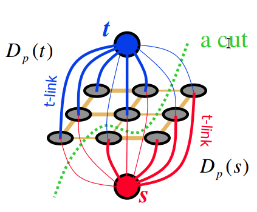

Problem:
Segment foreground from background
Given that:
Foureground in given bounding box.
Method:
Defind an Energy function $ E $,
Use Graph Cut to minimum $ E $
Done!
Energy:
Regional + Boundary
In this paper:
$$\mathbf{E}(\underline{\alpha}, \mathbf{k}, \underline{\theta}, \mathbf{z})=U(\underline{\alpha}, \mathbf{k}, \underline{\theta}, \mathbf{z})+V(\underline{\alpha}, \mathbf{z})$$
$ U $ evaluates the fit of the opacity distribution
$ V $ evaluates the smoothness of segmentation.
Max-Flow/Min-Cut

Gaussian Mixture Model：
a probabilistic model for representing normally distributed subpopulations within an overall population.